how to reshape the primordial tehom in 3 easy steps! hieratics HATE this trick!
The archetypal stuff
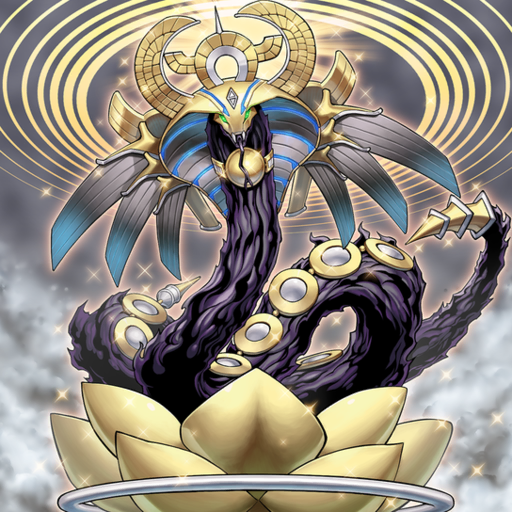
3x Nunu, the Ogdoadic Remnant
You can send this card from your hand to the GY; send 1 DARK Reptile monster from your Deck to the GY. If you control no monsters, or you control an "Ogdoadic" monster: You can Special Summon this card from your GY, but banish it when it leaves the field, also you cannot Special Summon monsters, except Reptile monsters, while this card is face-up in the Monster Zone. You can only use each effect of "Nunu, the Ogdoadic Remnant" once per turn.
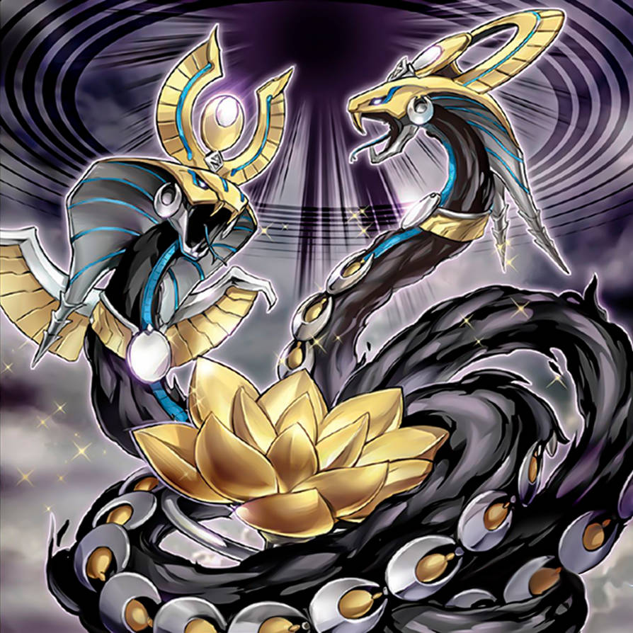
3x Nauya, the Ogdoadic Remnant
You can send this card from your hand to the GY; send 1 LIGHT Reptile monster from your Deck to the GY. If this card is Normal or Special Summoned: You can add 1 "Ogdoadic" Spell/Trap from your Deck to your hand. You can only use each effect of "Nauya, the Ogdoadic Remnant" once per turn.
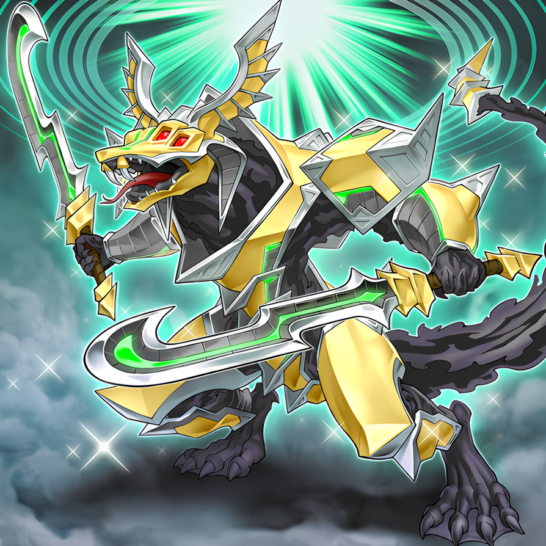
0-1x Flogos, the Ogdoadic Boundless
If this card is sent from the field to the GY, or Special Summoned from the GY: You can target 1 face-up monster your opponent controls, and 1 monster in their GY with an equal or higher ATK than that target; Special Summon that monster from the GY to their field, and if you do, send that other monster they control to the GY. If this card is in your GY: You can send 1 card from your hand to the GY; add this card to your hand. You can only use each effect of "Flogos, the Ogdoadic Boundless" once per turn.
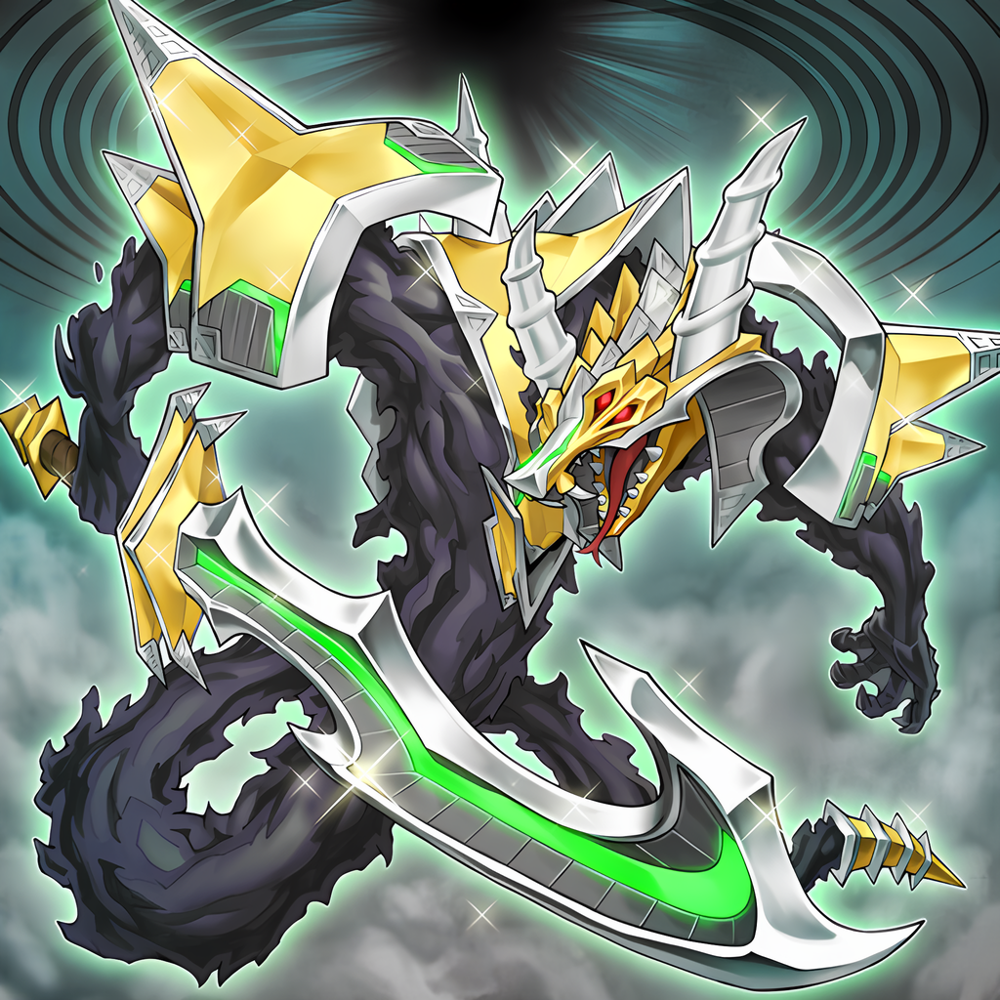
1x Zohah, the Ogdoadic Boundless
If this card is sent from the field to the GY, or Special Summoned from the GY: You can activate this effect; your opponent draws 1 card, and if they do, you add 1 "Ogdoadic" monster from your Deck to your hand, except "Zohah, the Ogdoadic Boundless", then, each player sends 1 card from their hand to the GY. If this card is in your GY: You can send 1 card from your hand to the GY; add this card to your hand. You can only use each effect of "Zohah, the Ogdoadic Boundless" once per turn.
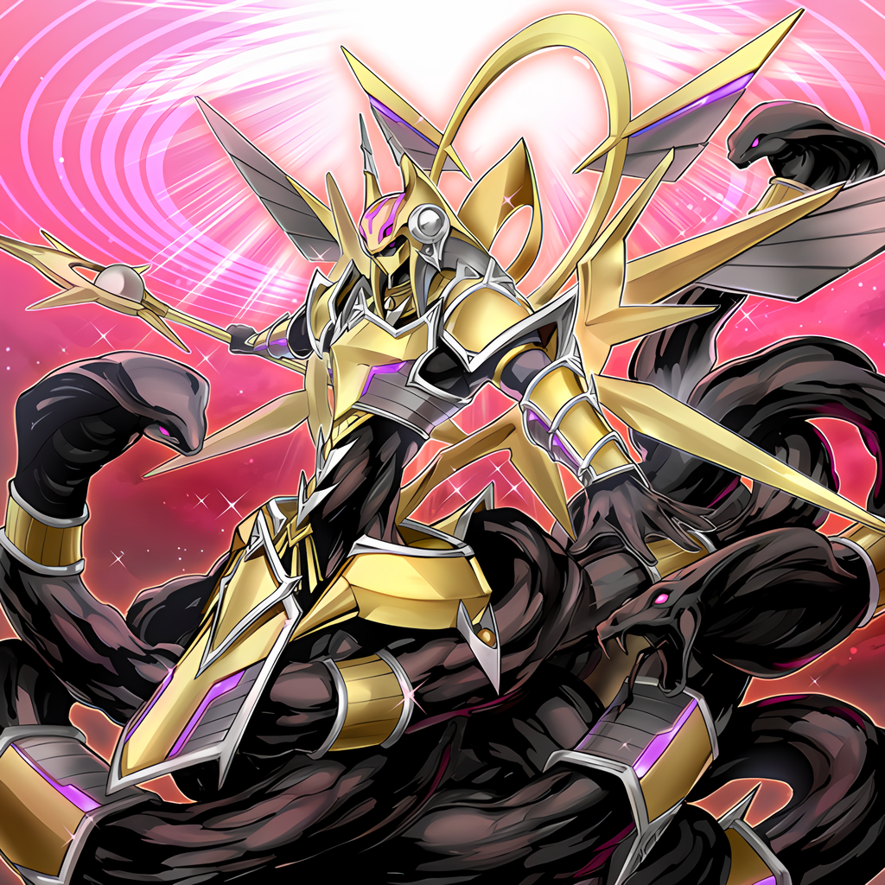
1x Keurse, the Ogdoadic Light
If this card is in your GY: You can Tribute 1 monster; Special Summon this card, then your opponent can Special Summon 1 monster from their GY, but negate its effects. If this card is Special Summoned: You can target 1 Level 4 or lower "Ogdoadic" monster in your GY; Special Summon it, but banish it when it leaves the field. You can only use each effect of "Keurse, the Ogdoadic Light" once per turn.
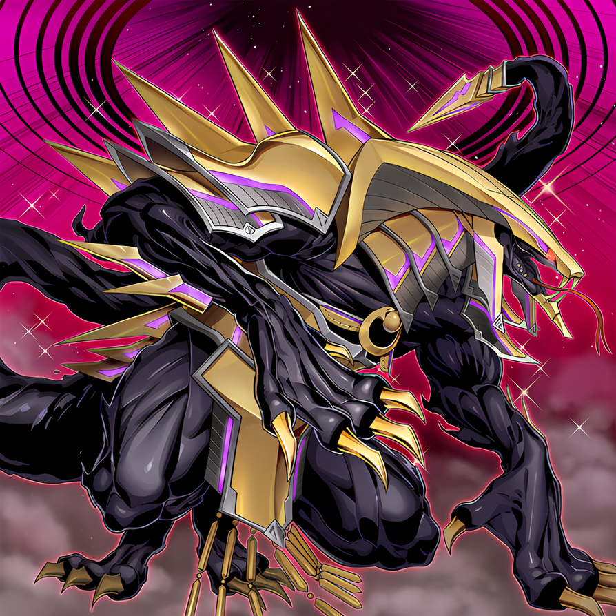
0-1x Aleirtt, the Ogdoadic Dark
If this card is in your GY: You can Tribute 1 monster; Special Summon this card, then your opponent can add 1 monster from their GY to their hand. If this card is Special Summoned: You can target 2 of your banished monsters, including a Reptile monster; return them to the GY. You can only use each effect of "Aleirtt, the Ogdoadic Dark" once per turn.
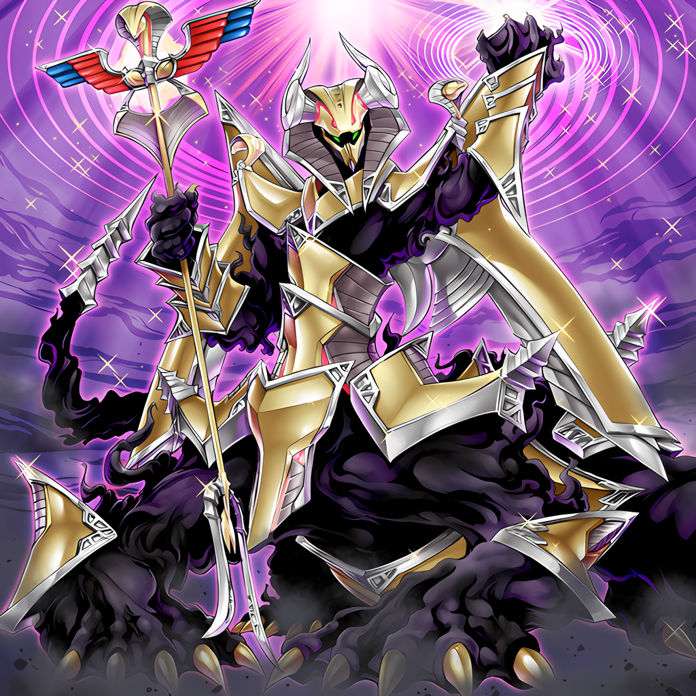
0-1x Aron, the Ogdoadic King
If this card is in your GY: You can Tribute 2 monsters; Special Summon this card. If your opponent adds a card(s) to their hand (except during the Draw Phase or Damage Step): You can send 1 random card from their hand to the GY. If a monster(s) your opponent controls is sent to the GY (except during the Damage Step): You can add 1 LIGHT or DARK Reptile monster from your Deck or GY to your hand, except "Aron, the Ogdoadic King". You can only use each effect of "Aron, the Ogdoadic King" once per turn.
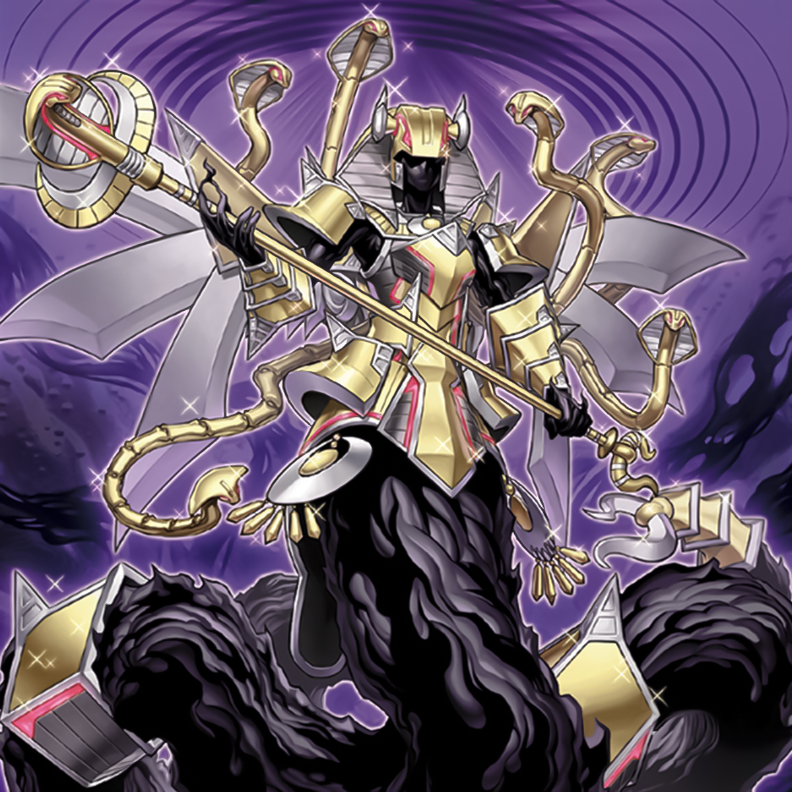
0-1x Amunessia, the Ogdoadic Queen
If this card is in your GY: You can Tribute 2 monsters; Special Summon this card. If a monster(s) is Special Summoned from your opponent's GY (except during the Damage Step): You can send 1 card they control to the GY. If a monster(s) is sent from your opponent's hand or Deck to the GY (except during the Damage Step): You can Special Summon 1 LIGHT or DARK Reptile monster from your GY, except "Amunessia, the Ogdoadic Queen". You can only use each effect of "Amunessia, the Ogdoadic Queen" once per turn.
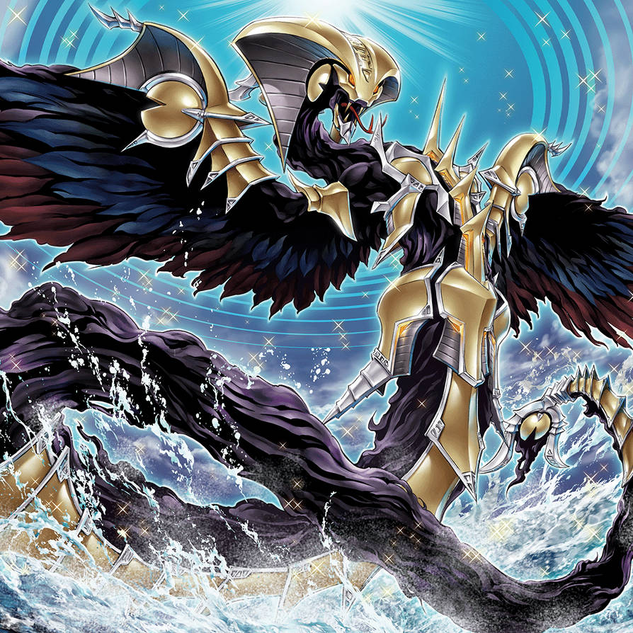
0-1x Ogdoabyss, the Ogdoadic Overlord
If this card is in your GY: You can Tribute 3 monsters; Special Summon this card. Once, while this card is face-up on the field (Quick Effect): You can send all monsters from the field to the GY, except face-up monsters Special Summoned from the GY. You can only use each effect of "Ogdoabyss, the Ogdoadic Overlord" once per turn.
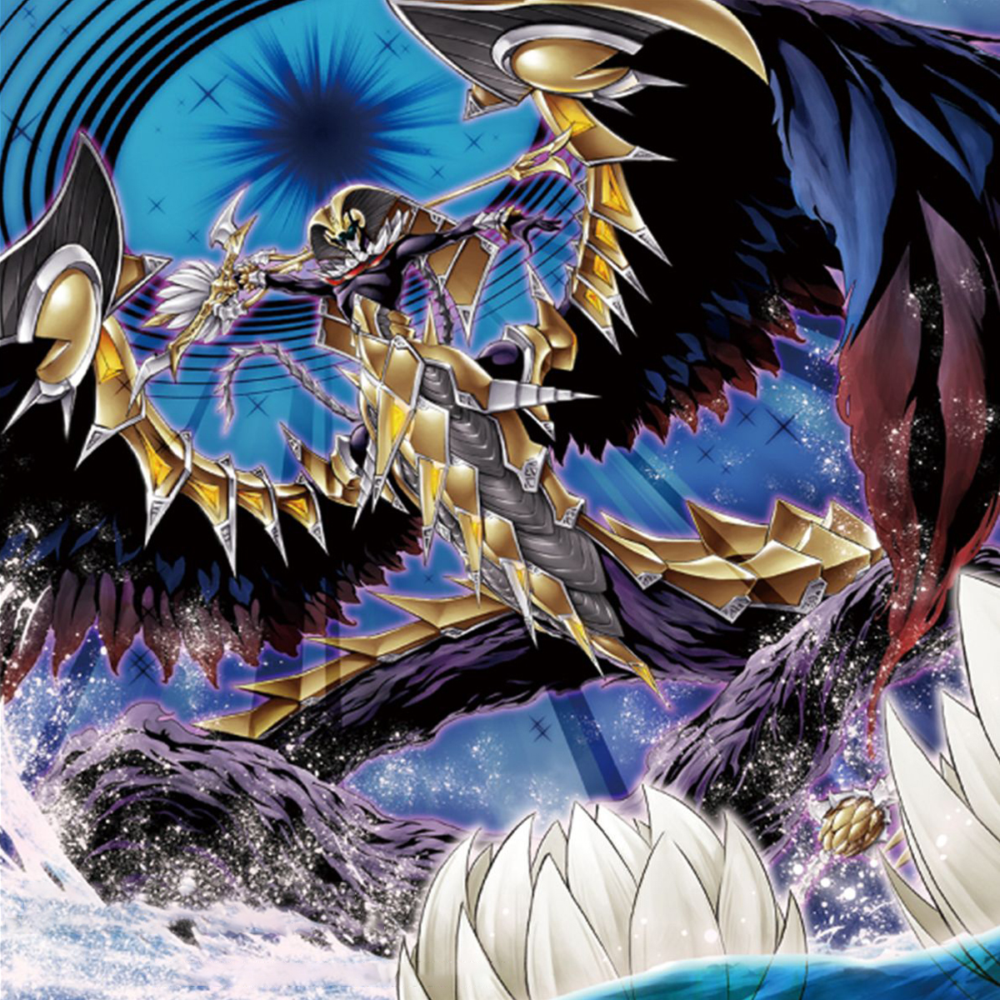
1x Nephilabyss, the Ogdoadic Overlord
If a monster(s) is sent from the hand or Deck to the GY, while this card is in your GY (except during the Damage Step): You can Special Summon this card, also you cannot Special Summon monsters until the end of the next turn, except Reptile monsters. If you control this card that was Special Summoned from the GY: You can target 1 monster in your GY, except "Nephilabyss, the Ogdoadic Overlord"; Special Summon it. You can only use each effect of "Nephilabyss, the Ogdoadic Overlord" once per turn.
1-3x Ogdoadic Daybreak
Tribute 1 Reptile monster; for every 2 Levels that Tributed monster had on the field, Special Summon up to 1 "Ogdoadic Token" (Reptile/DARK/Level 2/ATK 0/DEF 0). During your Main Phase: You can banish this card from your GY, then target 1 of your banished Reptile monsters; shuffle it into the Deck, then you can send 1 Reptile monster from your Deck to the GY. You can only use each effect of "Ogdoadic Daybreak" once per turn.
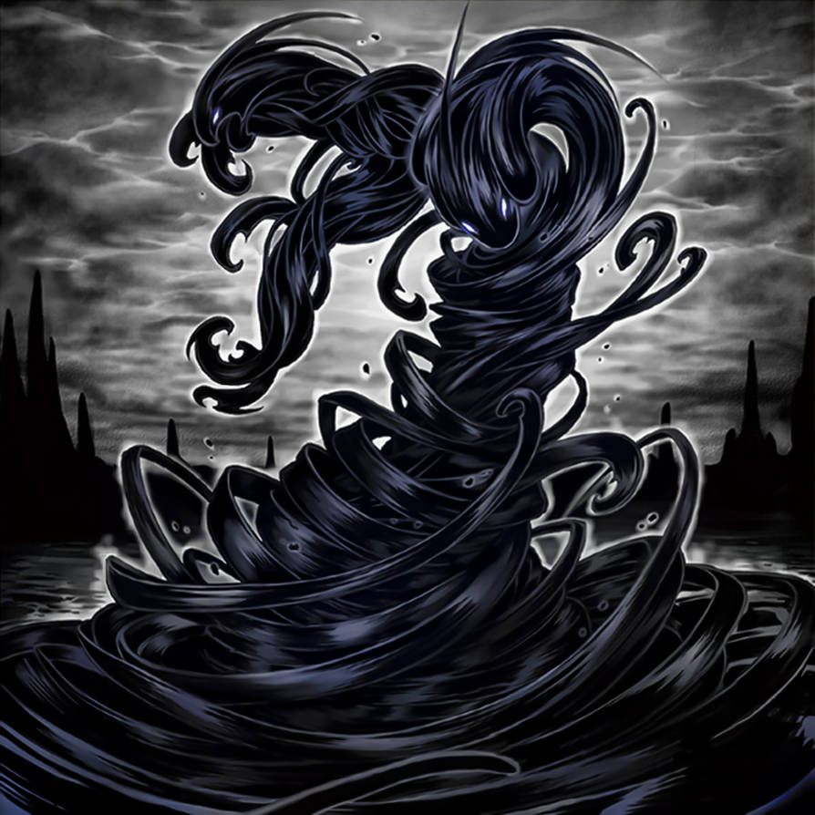
0x Ogdoadic Origin
If a face-up Reptile monster(s) you control is destroyed by battle or an opponent's card effect: You can target 1 card your opponent controls; send it to the GY. If this card in the Field Zone is destroyed by your opponent's card effect: You can send cards from the top of your opponent's Deck to the GY, equal to the number of Reptile monsters with different names in your GY. You can only use each effect of "Ogdoadic Origin" once per turn.
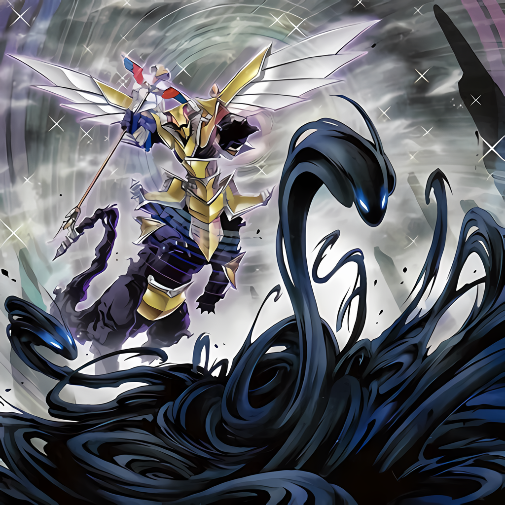
0-3x Ogdoadic Serpent Strike
You can send 1 monster from your hand or field to the GY, then target 1 Reptile monster in your GY with a different original Attribute than that monster; Special Summon it. During the Main Phase, if a monster is sent to your opponent's GY: You can send 1 Reptile monster from your Deck to the GY. You can only use each effect of "Ogdoadic Serpent Strike" once per turn.
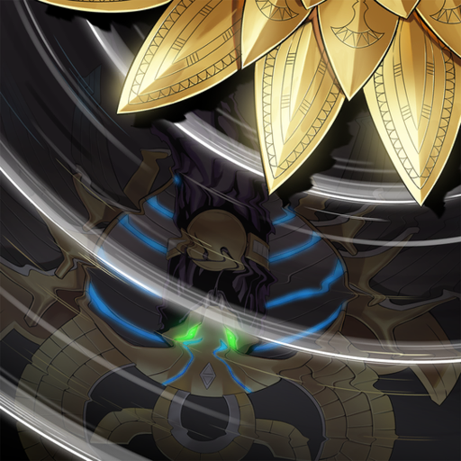
1-3x Ogdoadic Water Lily
Send 1 Reptile monster from your Deck to the GY, then if you have 5 or more Reptile monsters with different names in your GY, you can Special Summon 1 Reptile monster from your GY. You can only activate 1 "Ogdoadic Water Lily" per turn.
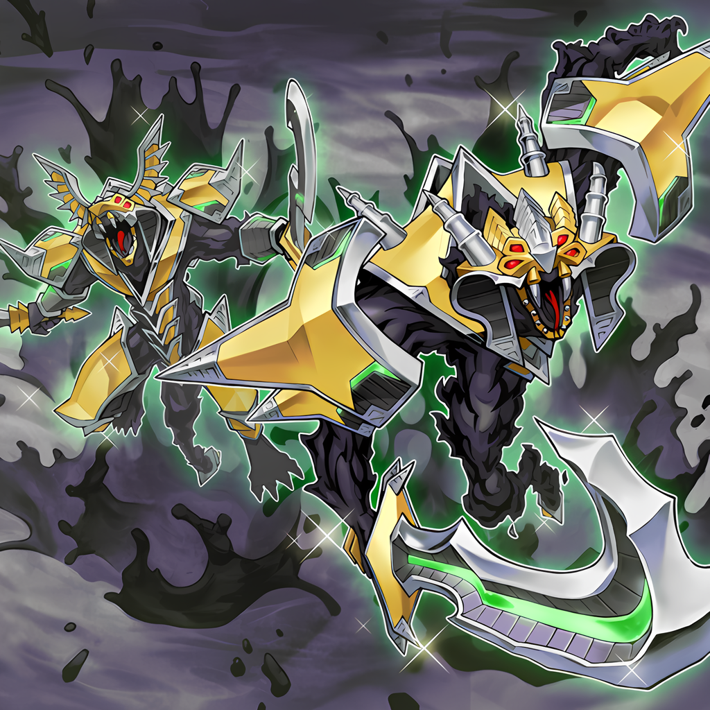
0x Ogdoadic Calling
Special Summon 2 "Ogdoadic Tokens" (Reptile/DARK/Level 2/ATK 0/DEF 0), OR if you have 8 or more "Ogdoadic" monsters with different names in your GY, you can apply this effect instead.
●Special Summon 2 Reptile monsters with different names from your GY.
You can only activate 1 "Ogdoadic Calling" per turn.
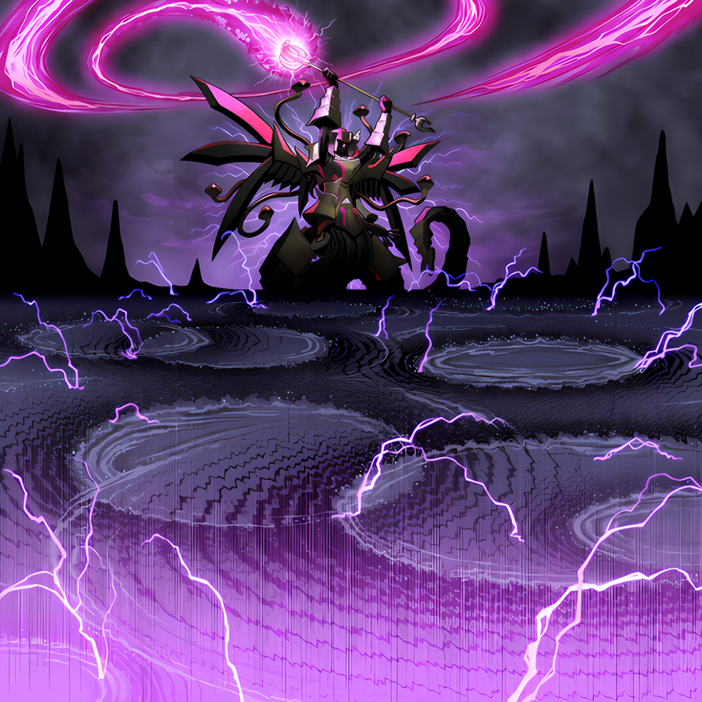
0x Ogdoadic Hollow
During the Main Phase: You can Tribute 1 Reptile Effect Monster, then target 1 monster in your opponent's GY; Special Summon it to your field, but send it to the GY during the End Phase. You can only use this effect of "Ogdoadic Hollow" once per turn. If this face-up card is sent from the Spell & Trap Zone to the GY: Send all face-up non-Reptile monsters you control to the GY.
The non-archetypal stuff that's important
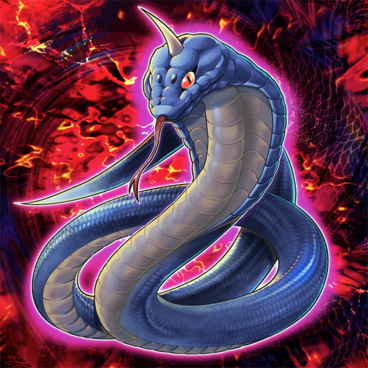
1x Black Mamba
If you control a Reptile monster, you can Special Summon this card (from your hand). You can only Special Summon "Black Mamba" once per turn this way. If this card is Normal or Special Summoned: You can target 1 monster your opponent controls; send 1 Reptile monster from your Deck to the GY, and if you do, change the targeted monster's battle position. You can only use this effect of "Black Mamba" once per turn.
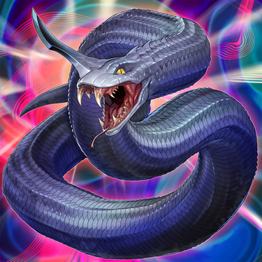
1x Night Sword Serpent
If this card is sent to the GY by a card effect: You can Special Summon this card, but banish it when it leaves the field. You can only use this effect of "Night Sword Serpent" once per turn.
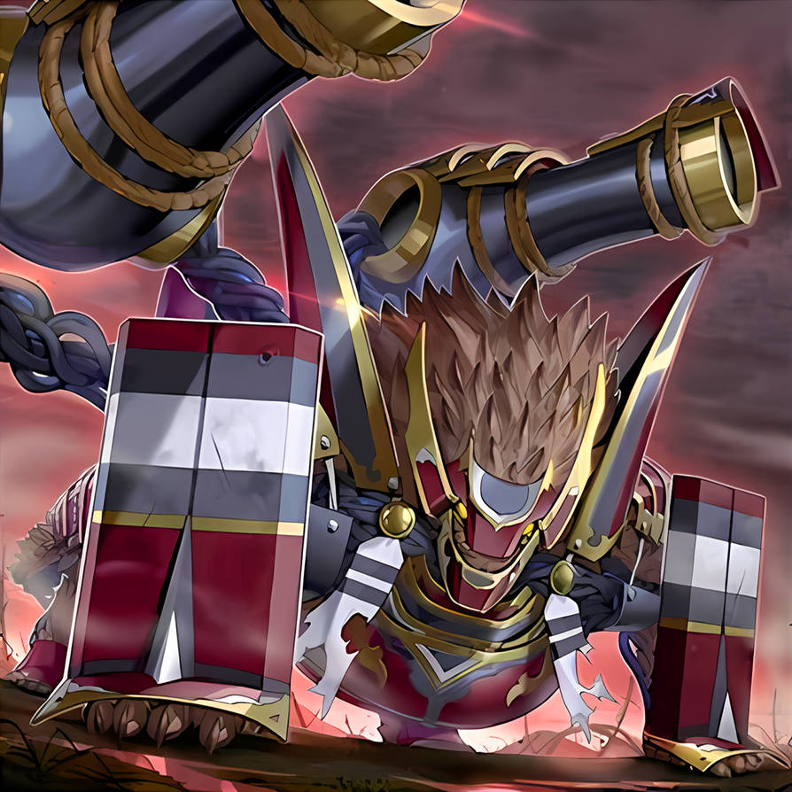
0-1x Ragnaraika Armored Lizard
You can Special Summon this card (from your hand) by banishing 1 Insect, Plant, or Reptile monster from your GY. You can only Special Summon "Ragnaraika Armored Lizard" once per turn this way. You can discard 1 Insect, Plant, or Reptile monster, then target 1 face-up monster your opponent controls, except an Insect, Plant, or Reptile monster; return it to the hand. You can only use this effect of "Ragnaraika Armored Lizard" once per turn.
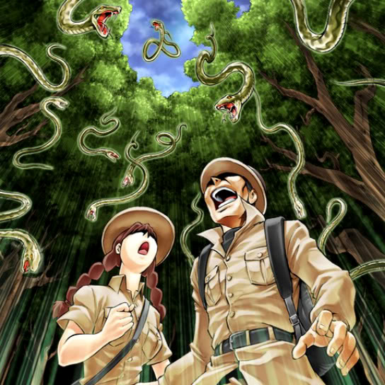
3x Snake Rain
Discard 1 card; send 4 Reptile monsters from your Deck to the GY.
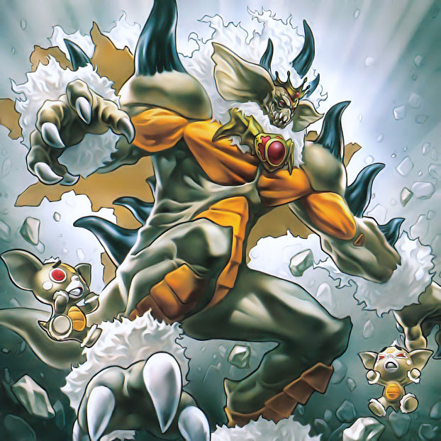
2-3x King of the Feral Imps
2 Level 4 monsters
Once per turn: You can detach 1 material from this card; add 1 Reptile monster from your Deck to your hand.
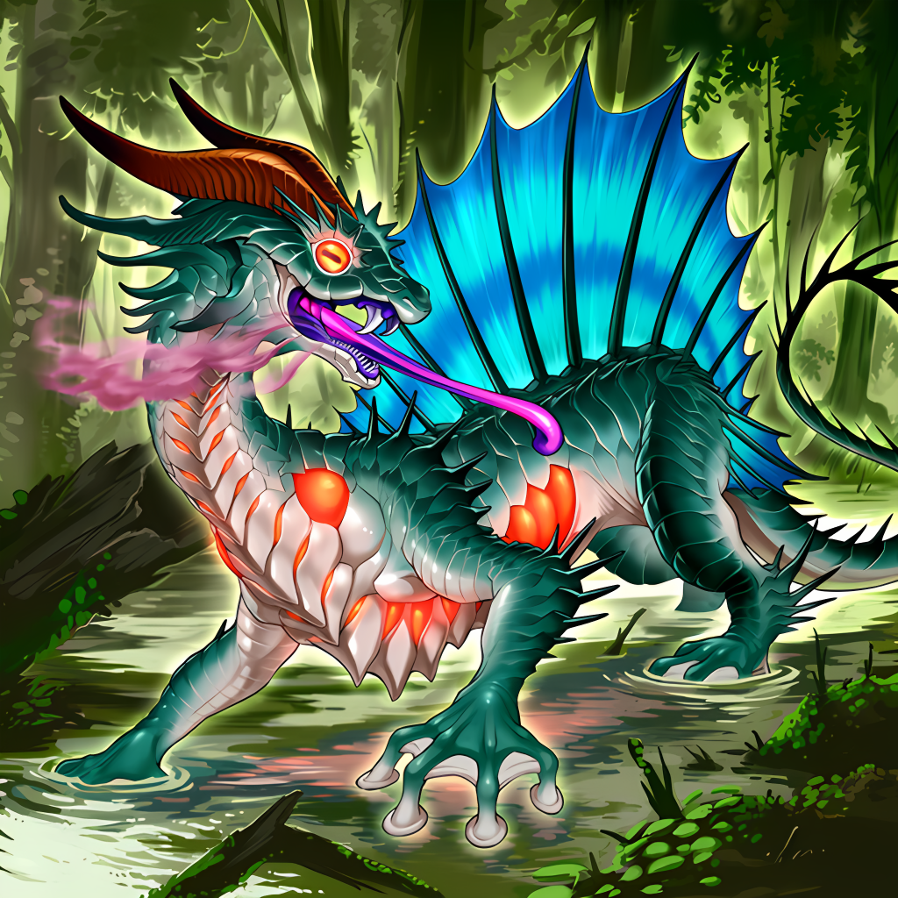
1x Haggard Lizardose
2 monsters with different names
You can banish 1 monster from your face-up field or GY with 2000 or less ATK, then target 1 face-up monster on the field; make its ATK become equal to the original ATK of the monster banished to activate this effect (until the end of this turn), then if you banished a monster that was originally Reptile, draw 1 card. You can only use this effect of "Haggard Lizardose" once per turn.
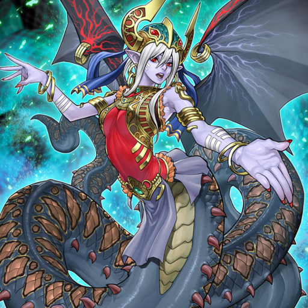
1x Reptilianne Echidna
2 monsters, including a Reptile monster
If this card is Link Summoned: You can target 1 face-up monster your opponent controls; change its ATK to 0. During your Main Phase, if your opponent controls a monster(s) with 0 ATK: You can add Reptile monsters with different names from your Deck to your hand, up to the number of monsters your opponent controls with 0 ATK, also, you cannot Special Summon monsters from the Extra Deck for the rest of this turn, except Reptile monsters. You can only use each effect of "Reptilianne Echidna" once per turn.
Alien
a-counter time
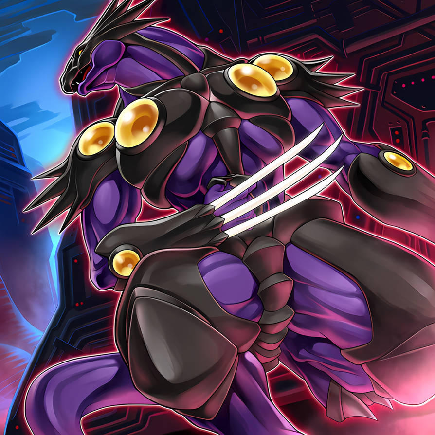
0-1x Alien Stealthbuster
If this card is sent to the GY: You can target 1 face-up monster on the field; place 2 A-Counters on it. During your Main Phase, except the turn this card was sent to the GY: You can banish this card from your GY, then target 1 card with an A-Counter; destroy it. You can only use each effect of "Alien Stealthbuster" once per turn.
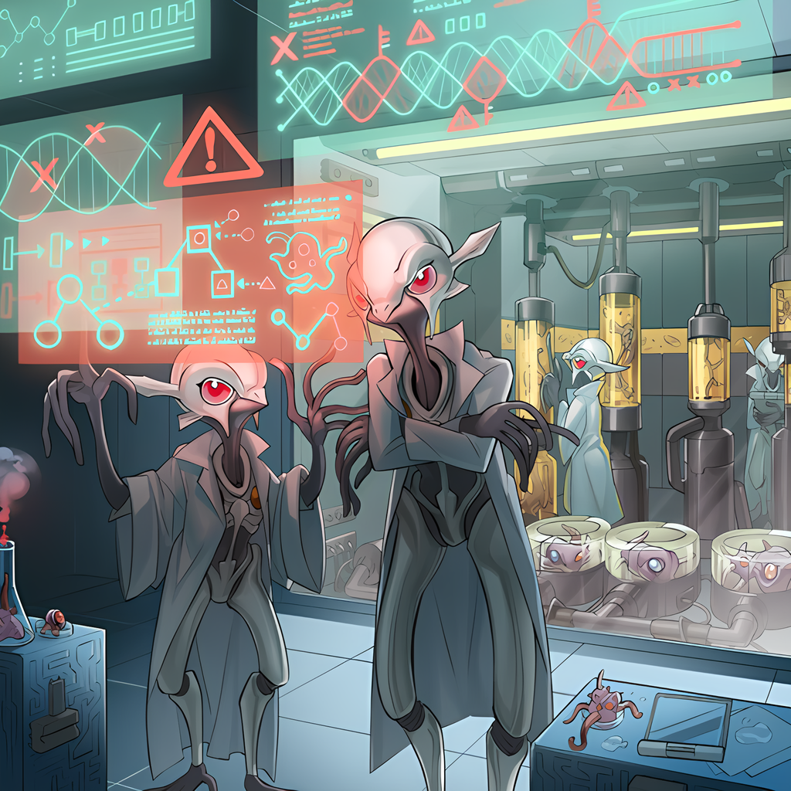
0-1x "A" Cell Recombination Device
Target 1 face-up monster on the field; send 1 "Alien" monster from your Deck to the Graveyard, and if you do, place A-Counters on that monster equal to the Level of the sent monster. During your Main Phase, except the turn this card was sent to the Graveyard: You can banish this card from your Graveyard; add 1 "Alien" monster from your Deck to your hand.
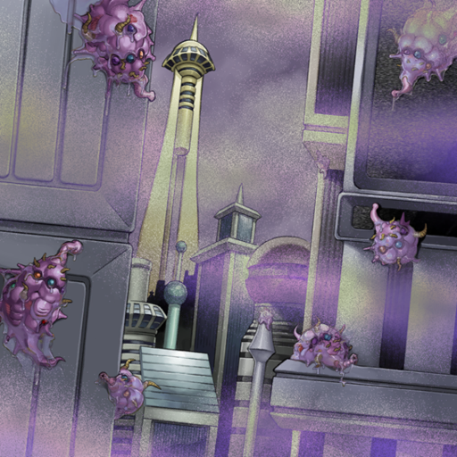
1x Planet Pollutant Virus
Tribute 1 "Alien" monster. Destroy all face-up monsters without A-Counters your opponent controls. Until the end of your opponent's 3rd turn after this card's activation, place 1 A-Counter on each monster they Summon.
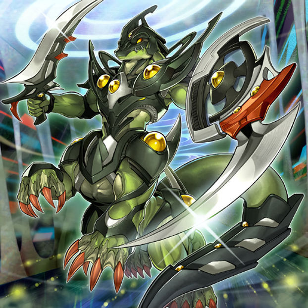
1x Alien Shocktrooper M-Frame
2 Reptile monsters
(Quick Effect): You can discard 1 monster; place A-Counters equal to its original Level on face-up monster(s) on the field, distributed as you wish. If this card is destroyed by battle or card effect and sent to the GY: You can Special Summon non-Link Reptile monsters with different names from your GY, up to the number of monsters your opponent controls with A-Counters. You can only use each effect of "Alien Shocktrooper M-Frame" once per turn.
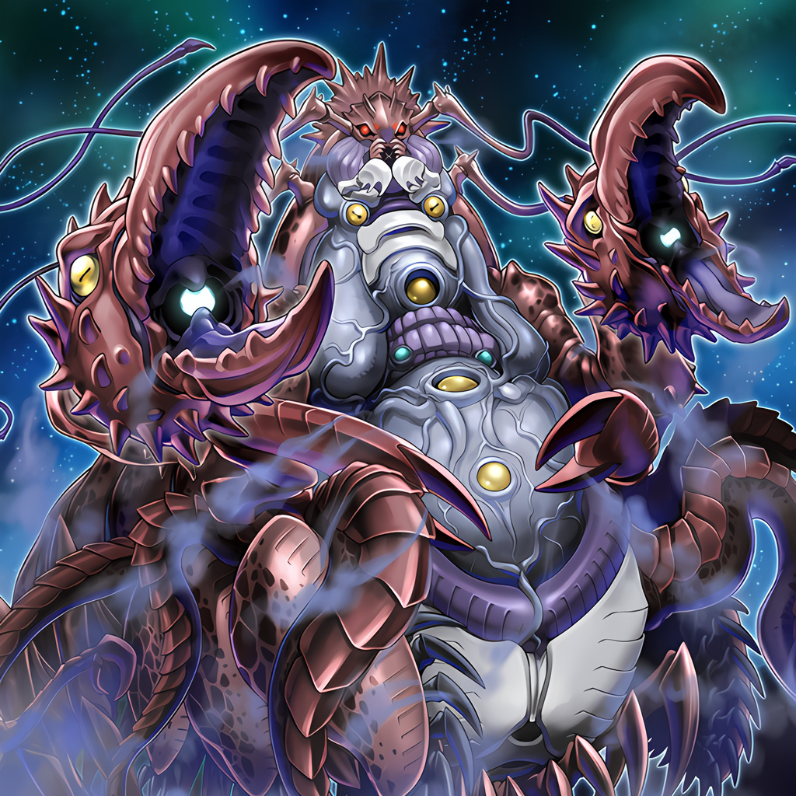
1x Cosmic Slicer Zer'oll
2+ Reptile monsters
Monsters your opponent controls with A-Counters are changed to Defense Position, also neither player can activate their effects. You can only use each of the following effects of "Cosmic Slicer Zer'oll" once per turn. If this card is Link Summoned: You can add 1 card from your Deck to your hand that has an effect that places A-Counter(s). You can remove 2 A-Counters from anywhere on the field; immediately after this effect resolves, Normal Summon 1 Reptile monster.
Evol
evol time
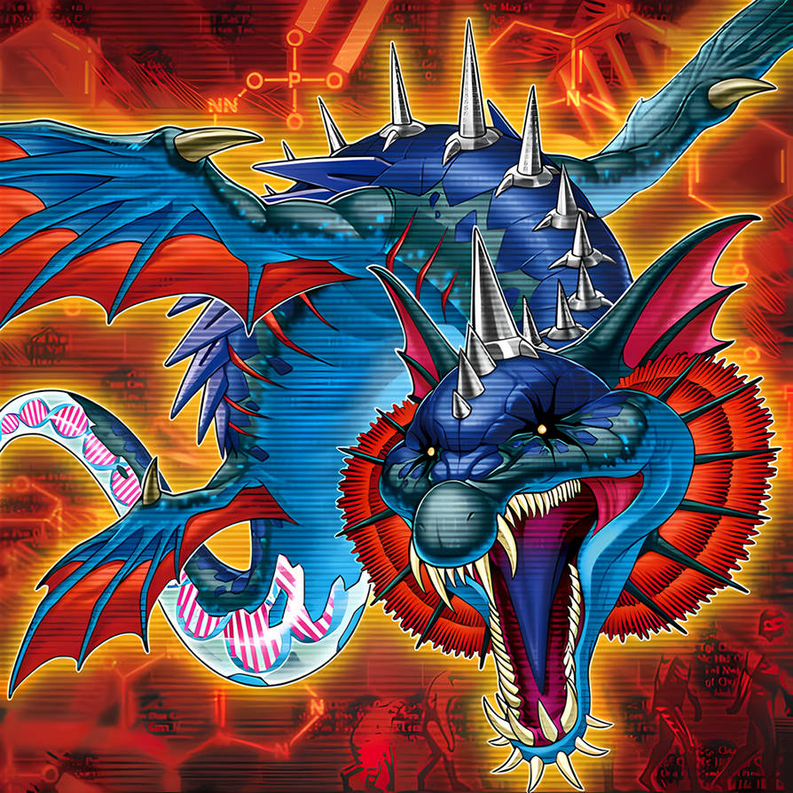
1-3x Evolsaur Lios
If this card is Normal or Special Summoned: You can Set 1 "Evolutionary Bridge" or "Evo-Singularity" directly from your Deck. During your Main Phase, if you control this card that was Normal Summoned, or Special Summoned by the effect of a FIRE monster: You can send 1 FIRE Reptile or Dinosaur monster from your Deck to the GY, then you can make 2 monsters on the field become the same Type and Level as that monster sent to the GY. You can only use each effect of "Evolsaur Lios" once per turn.
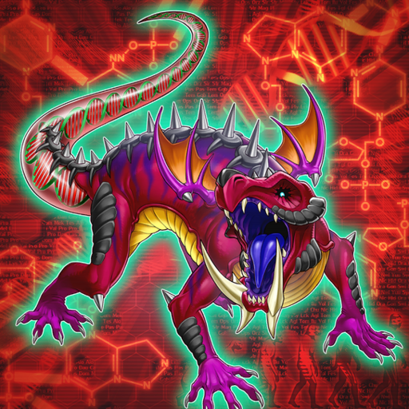
1x Evoltile Megachirella
You can Tribute 1 Reptile monster, then discard 1 card; Special Summon 1 Level 6 or lower FIRE Dinosaur monster from your Deck. You can banish this card from your GY, then target 1 Dragon Xyz Monster you control with no material; attach up to 2 Reptile and/or Dinosaur monsters with different names from your hand and/or GY to that monster as material. You can only use each effect of "Evoltile Megachirella" once per turn.
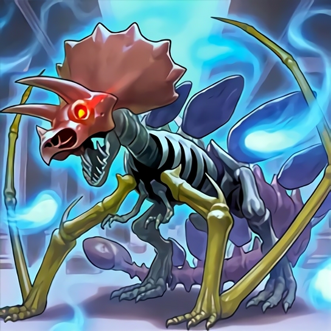
1x Miscellaneousaurus
During the Main Phase (Quick Effect): You can send this card from your hand to the GY; during this Main Phase, Dinosaur monsters you control are unaffected by your opponent's activated effects. You can banish any number of Dinosaur monsters from your GY, including this card; Special Summon 1 Dinosaur monster from your Deck with a Level equal to the total number of monsters banished to activate this effect, but destroy it during the End Phase. You can only use this effect of "Miscellaneousaurus" once per turn.
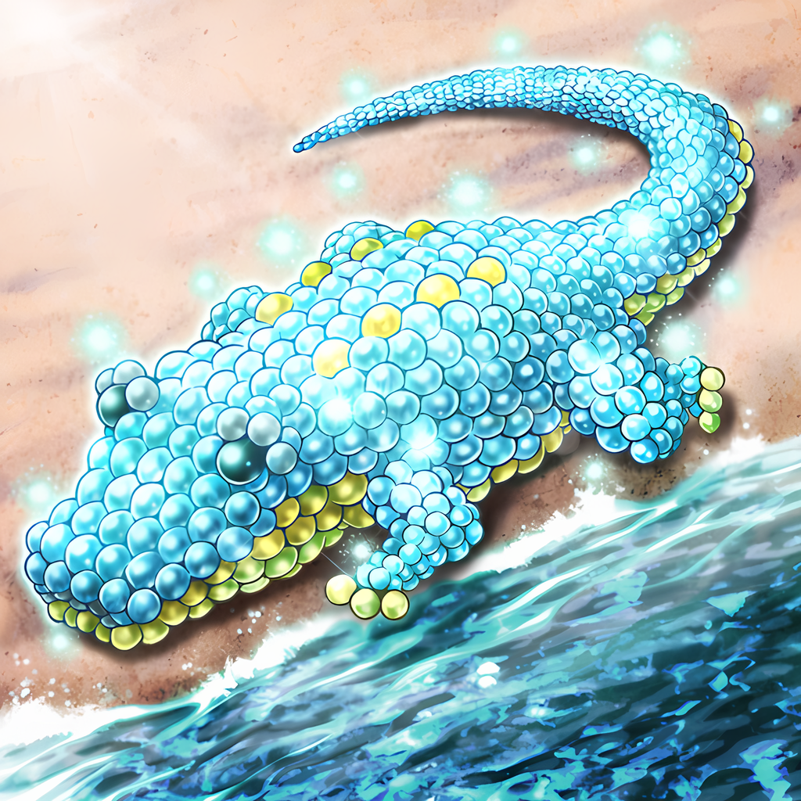
1x Animadorned Archosaur
If this card is Normal or Special Summoned: You can destroy 1 Dinosaur monster in your hand or face-up field, except "Animadorned Archosaur", then add 1 Reptile, Sea Serpent, or Winged Beast monster with the same original Level as that destroyed monster, OR 1 "Evolution Pill" Spell, from your Deck to your hand. You can only use this effect of "Animadorned Archosaur" once per turn.
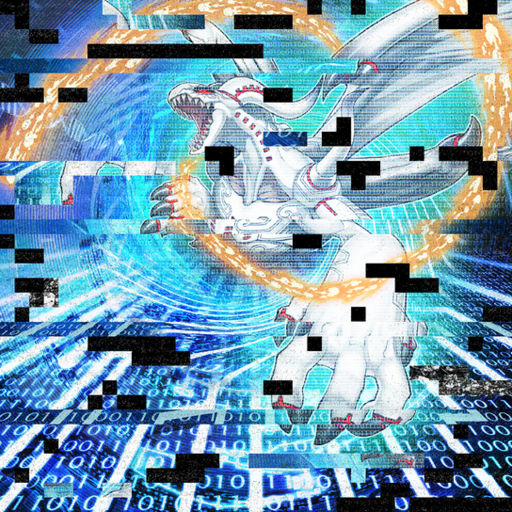
1x Evo-Singularity
Target 1 "Evoltile" monster and 1 "Evolsaur" monster in your Graveyard; Special Summon 1 "Evolzar" Xyz Monster from your Extra Deck, and if you do, attach those monsters to it as Xyz Materials.
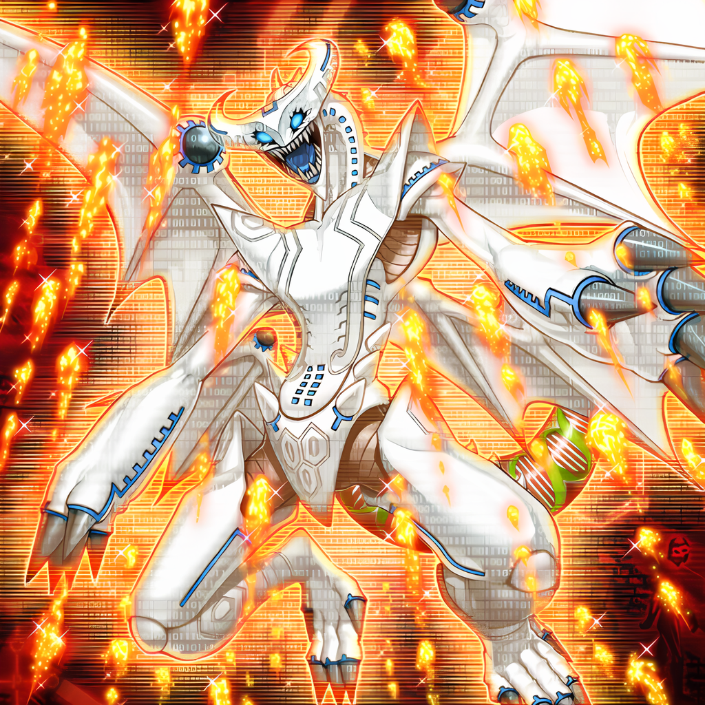
0-1x Evolzar Dolkka
2 Level 4 Dinosaur monsters
When another monster's effect is activated (Quick Effect): You can detach 1 material from this card; negate the activation, and if you do, destroy that monster.
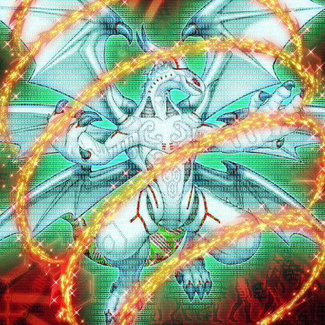
0-1x Evolzar Laggia
2 Level 4 Dinosaur monsters
When a monster(s) would be Normal or Special Summoned, OR a Spell/Trap Card is activated (Quick Effect): You can detach 2 materials from this card; negate the Summon or activation, and if you do, destroy it.
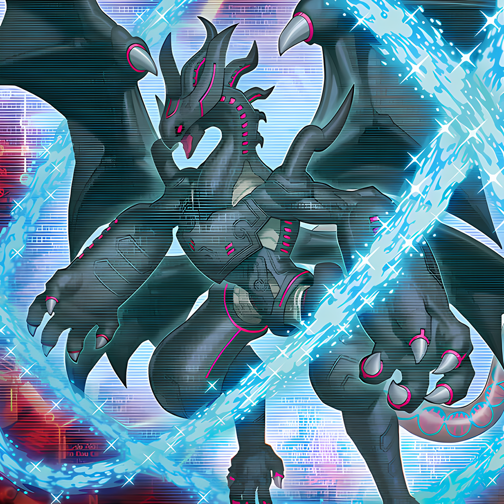
1x Evolzar Lars
2 Level 6 monsters
While this card has material, your opponent cannot target it with monster effects. When your opponent activates a card or effect (Quick Effect): You can detach 2 materials from this card, or just 1 material if all this card's materials are Reptile and/or Dinosaur, then target 1 face-up card your opponent controls; negate its effects until the end of this turn.
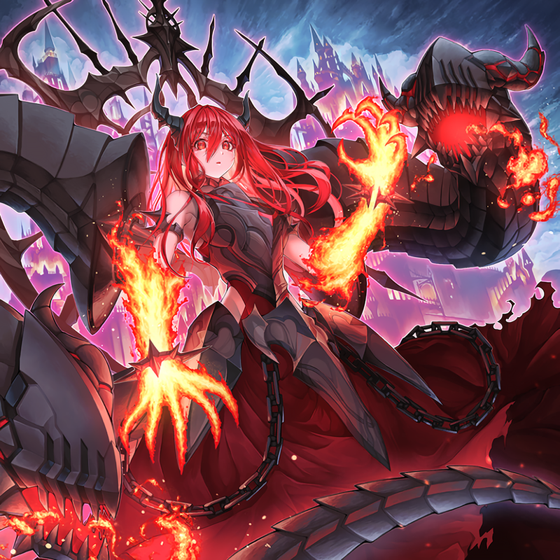
1x Promethean Princess
2+ Effect Monsters
You cannot Special Summon monsters, except FIRE monsters. You can only use each of the following effects of "Promethean Princess, Bestower of Flames" once per turn. During your Main Phase: You can Special Summon 1 FIRE monster from your GY. If a monster(s) is Special Summoned to your opponent's field, while this card is in your GY (except during the Damage Step): You can target 1 FIRE monster you control and 1 monster your opponent controls; destroy them, and if you do, Special Summon this card.
Melodious
music time
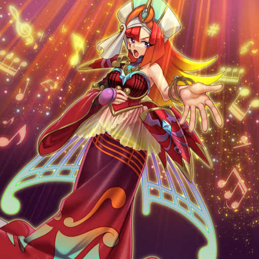
3x Refrain the Melodious Songstress
Pendulum Effect: You can target 1 "Melodious" Fusion Monster you control; send 1 "Melodious" monster from your Deck to the GY, and if you do, the targeted monster gains ATK equal to the Level of that monster sent to the GY x 200 until the end of this turn. You can only use this effect of "Refrain the Melodious Songstress" once per turn.
Monster Effect: If this card is Normal or Special Summoned: You can add 1 "Melodious" monster from your Deck to your hand, except "Refrain the Melodious Songstress". If a "Melodious" Fusion Monster(s) is Special Summoned to your field, while this card is face-up in your Extra Deck (except during the Damage Step): You can place this card in your Pendulum Zone. You can only use each effect of "Refrain the Melodious Songstress" once per turn.
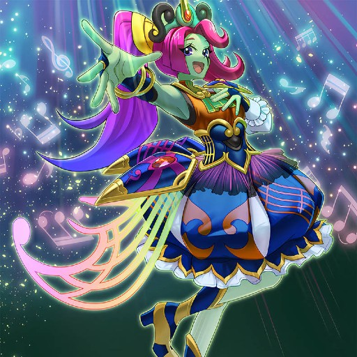
1x Couplet the Melodious Songstress
Pendulum Effect: You cannot Pendulum Summon, except LIGHT monsters (this effect cannot be negated). If you do not control any face-up monsters, other than "Melodious" monsters: You can add 1 "Melodious" Spell/Trap from your Deck to your hand. You can only use this effect of "Couplet the Melodious Songstress" once per turn.
Monster Effect: If this card is added to your hand, except by drawing it for your normal draw: You can reveal this card; Special Summon 1 Level 4 or lower "Melodious" monster from your hand or GY. If a "Melodious" Fusion Monster(s) is Special Summoned to your field, while this card is face-up in your Extra Deck (except during the Damage Step): You can place this card in your Pendulum Zone. You can only use each effect of "Couplet the Melodious Songstress" once per turn.
3x Ostinato
If you control no monsters: Fusion Summon 1 "Melodious" Fusion Monster from your Extra Deck, using 2 monsters from your hand and/or Deck as material. During the End Phase of this turn, destroy the monster Fusion Summoned by this effect, and if you do, if all the materials that were used for its Fusion Summon are in your GY, you can Special Summon all of them.
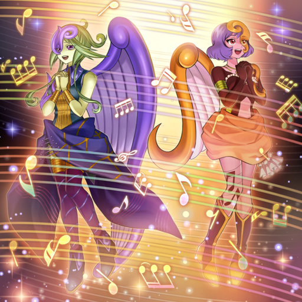
1x Melodious Concerto
Fusion Summon 1 Fairy Fusion Monster from your Extra Deck, using monsters from your hand, field, and/or Pendulum Zones. If a "Melodious" Fusion Monster(s) is sent to your GY while this card is in your GY, even during the Damage Step: You can place this card on the bottom of your Deck, then draw 1 card. You can only use each effect of "Melodious Concerto" once per turn.
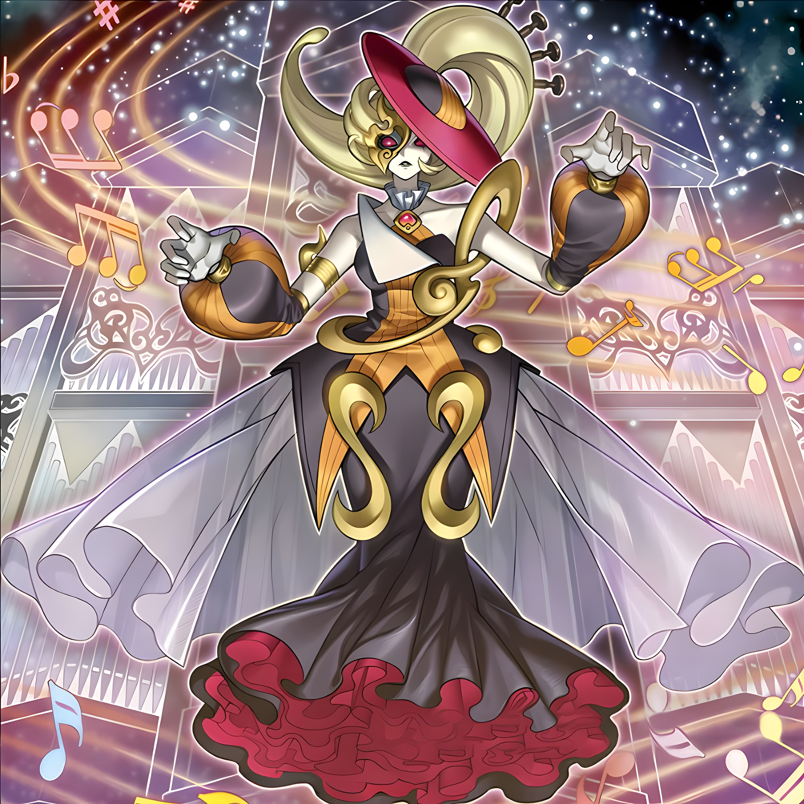
1-2x Bacha the Melodious Maestra
2 "Melodious" monsters
While you control this Fusion Summoned card, the activated effects of your "Melodious" Fusion Monsters cannot be negated. You can only use each of the following effects of "Bacha the Melodious Maestra" once per turn. If this card is Special Summoned: You can Special Summon 1 "Melodious" monster from your Deck. If this card is sent to the GY: You can target 1 "Melodious" monster in your GY, except "Bacha the Melodious Maestra"; Special Summon it in Defense Position.
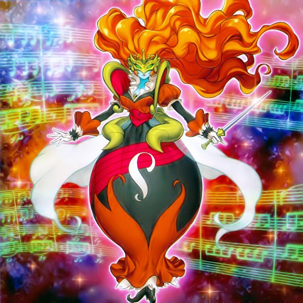
0-1x Schuberta the Melodious Maestra
2 "Melodious" monsters
Once while face-up on the field (Quick Effect): You can target up to 3 cards in any GY(s); banish them, and if you do, this card gains 200 ATK for each.
Mitsurugi
mitsu time
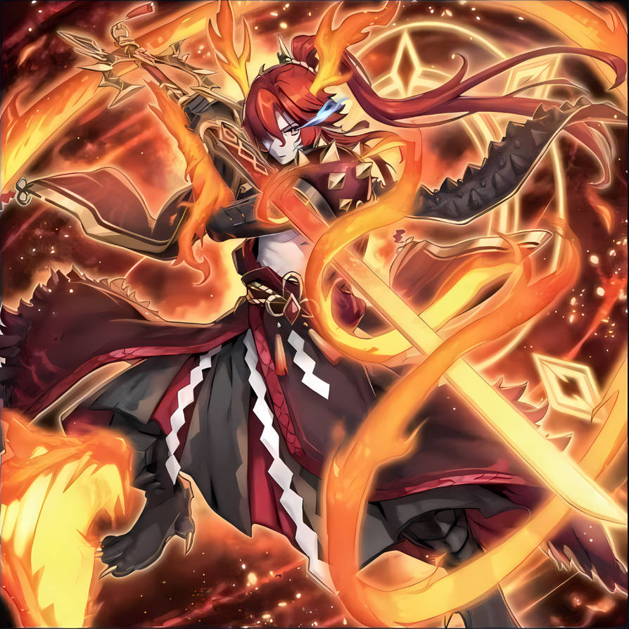
1-3x Mitsurugi no Mikoto, Saji
If this card is Normal or Special Summoned, or if this card is Tributed: You can add 1 “Mitsurugi” Spell/Trap from your Deck to your hand. If another Reptile monster(s) you control would be destroyed by battle or card effect, you can Tribute this card instead. You can only use each effect of “Mitsurugi no Mikoto, Saji” once per turn.
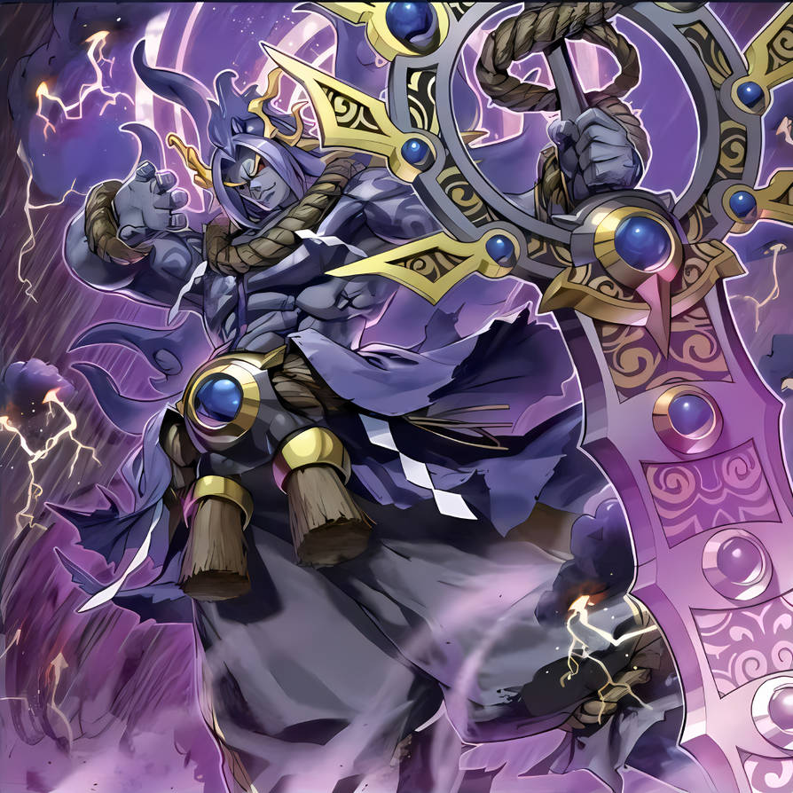
1x Mitsurugi no Mikoto, Kusanagi
If this card is Normal or Special Summoned, or if this card is Tributed: You can target 1 “Mitsurugi” card in your GY or banishment, except “Mitsurugi no Mikoto, Kusanagi”; add it to the hand. If another Reptile monster(s) you control would be destroyed by battle or card effect, you can Tribute this card instead. You can only use each effect of “Mitsurugi no Mikoto, Kusanagi” once per turn.
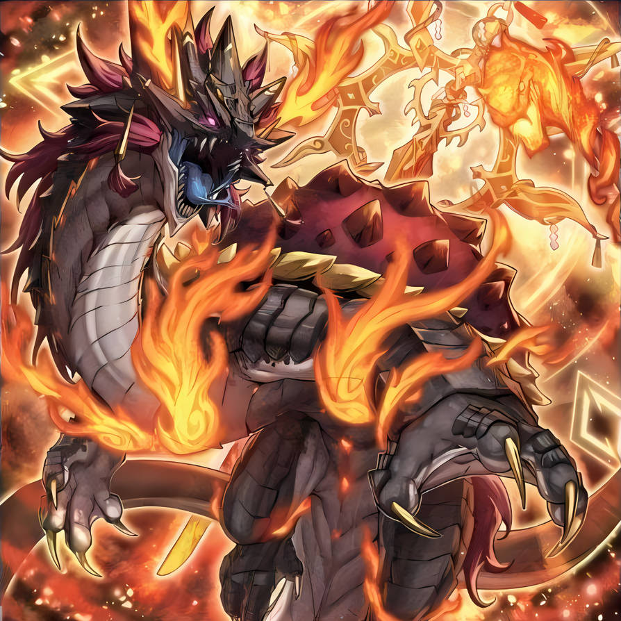
1x Futsu no Mitama no Mitsurugi
You can Ritual Summon this card with “Mitsurugi Ritual”. If your opponent Special Summons a monster(s) (except during the Damage Step): You can target 1 Reptile monster in your GY, except “Futsu no Mitama no Mitsurugi”; Special Summon it. You can only activate this effect of “Futsu no Mitama no Mitsurugi” once per Chain. If this card is Tributed: You can add 1 “Mitsurugi” card from your Deck to your hand, except “Futsu no Mitama no Mitsurugi”, then you can Special Summon this card. You can only use this effect of “Futsu no Mitama no Mitsurugi” once per turn.
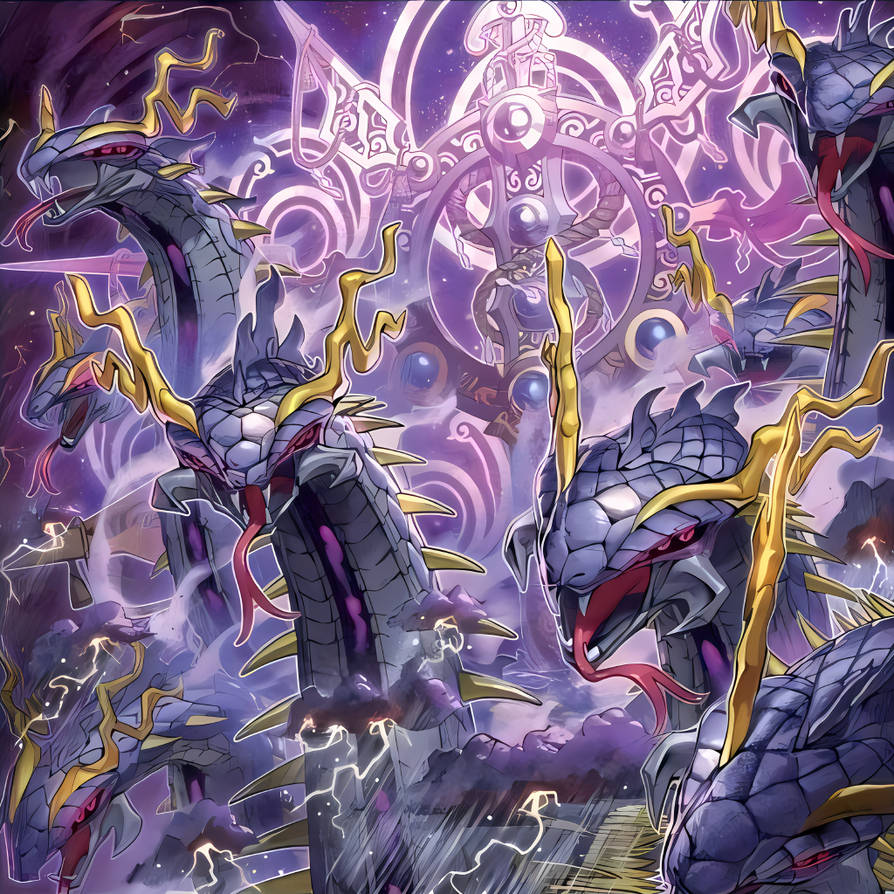
1x Ame no Murakumo no Mitsurugi
You can Ritual Summon this card with “Mitsurugi Ritual”. If this card is Special Summoned: You can destroy all monsters your opponent controls. When your opponent activates a card or effect (Quick Effect): You can activate this effect; your opponent can discard 1 card, or that effect is negated. If this card is Tributed: You can add 1 “Mitsurugi” card from your Deck to your hand, except “Ame no Murakumo no Mitsurugi”, then you can Special Summon this card. You can only use each effect of “Ame no Murakumo no Mitsurugi” once per turn.
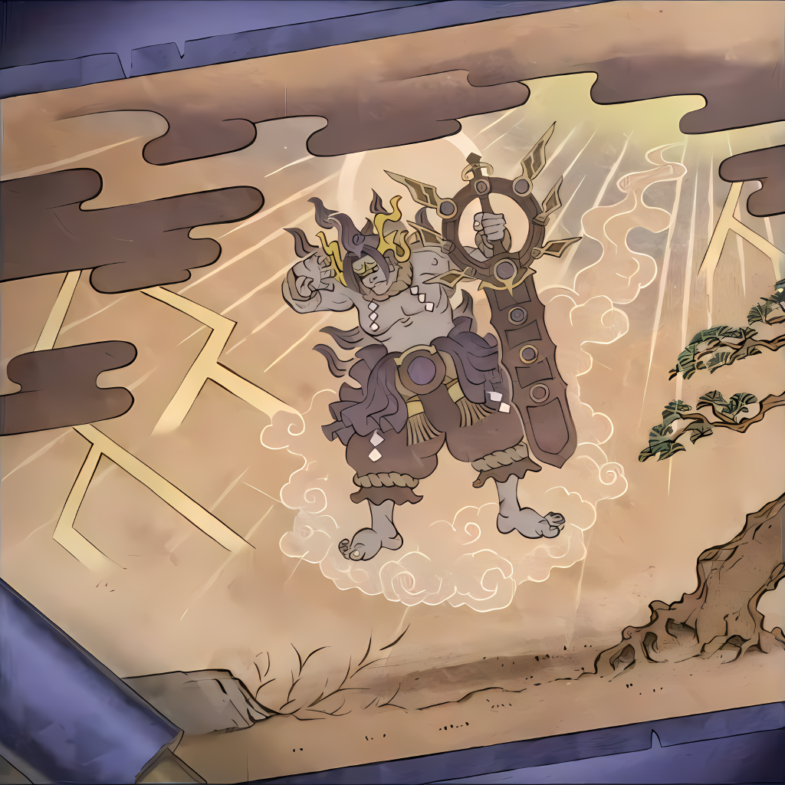
3x Mitsurugi Prayers
When you activate this card, you can also Tribute 1 Reptile monster in your hand or field; apply 1 of these effects, or if you Tributed a monster at activation, you can apply both effects in sequence.
●Add 1 “Mitsurugi” monster from your Deck to your hand.
●Take 800 damage, then you can Special Summon 1 “Mitsurugi” monster from your hand or GY, but it cannot attack directly.
You can only activate 1 “Mitsurugi Prayers” per turn.
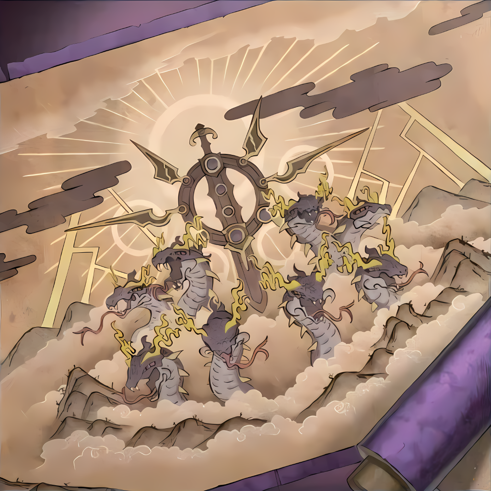
1-3x Mitsurugi Ritual
This card can be used to Ritual Summon any Reptile Ritual Monster. Activate 1 of these effects (but you can only use each effect of Mitsurugi Ritual” once per turn);
●Ritual Summon 1 Reptile Ritual monster from your Deck, by Tributing Reptile monsters from your hand or field whose total Levels equal the Level of the Ritual Monster.
●RItual Summon 1 Reptile Ritual Monster from your hand, by Tributing up to 2 Reptile monsters from your hand, Deck, or field, whose total Levels equal the Level of the Ritual Monster.
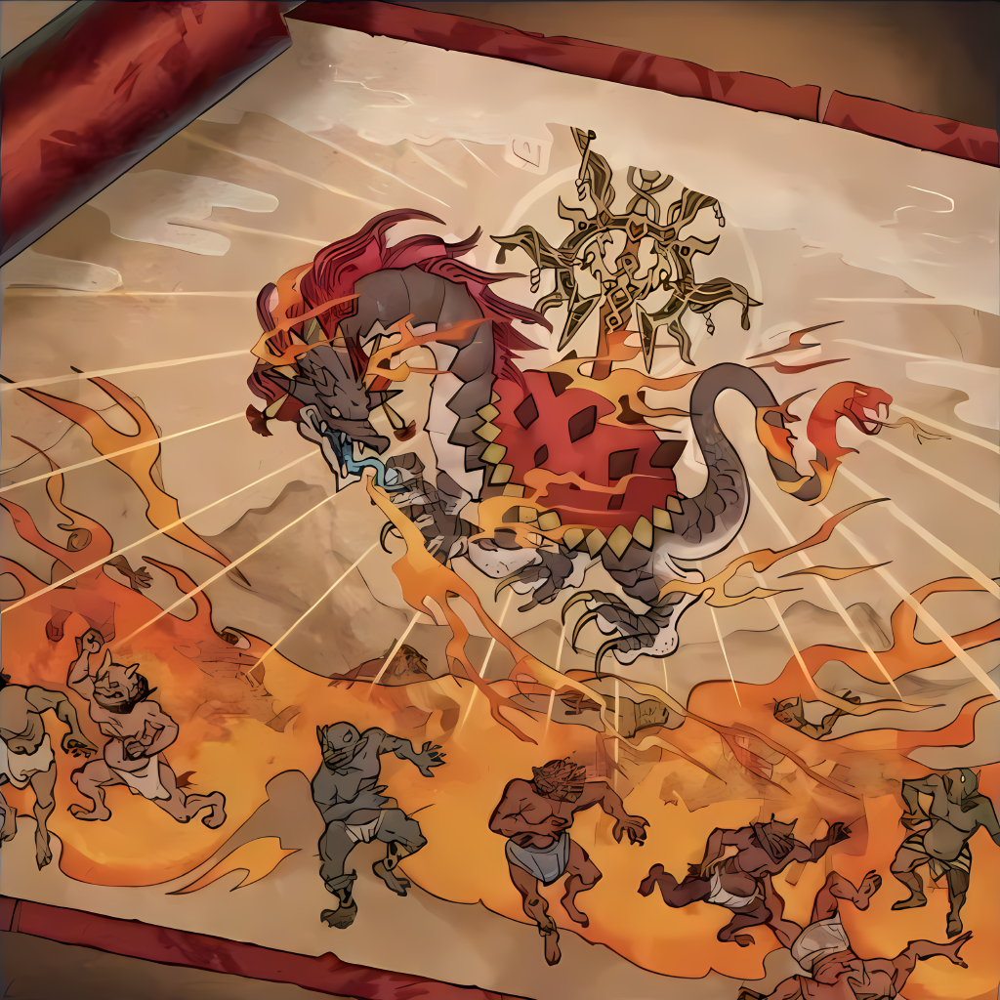
1x Mitsurugi Great Purification
When your opponent activates a card or effect: Tribute 1 Level 5 or higher Reptile monster; negate that effect, and if you do, destroy that card. You can banish this card from your GY, then target 1 Reptile monster in your GY; Special Summon it, and if you do, Tribute 1 other monster you control. You can only use 1 "Mitsurugi Great Purification" effect per turn, and only once that turn.
Ragnaraika
raika time
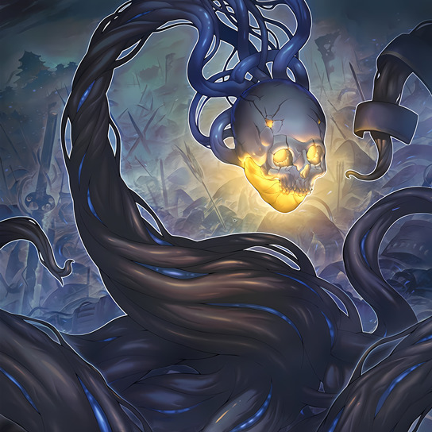
3x Ragnaraika the Evil Seed
You can Special Summon this card (from your hand) by sending 1 Insect, Plant, or Reptile monster from your hand to the GY. You can only Special Summon "Ragnaraika the Evil Seed" once per turn this way. If this card is Normal or Special Summoned: You can add to your hand up to 2 different "Ragnaraika" cards of yours that are banished and/or in your Deck, except "Ragnaraika the Evil Seed", then banish 1 card from your hand, also you cannot Special Summon for the rest of this turn, except Insect, Plant, or Reptile monsters. You can only use this effect of "Ragnaraika the Evil Seed" once per turn.
1x Ragnaraika Armored Lizard
You can Special Summon this card (from your hand) by banishing 1 Insect, Plant, or Reptile monster from your GY. You can only Special Summon "Ragnaraika Armored Lizard" once per turn this way. You can discard 1 Insect, Plant, or Reptile monster, then target 1 face-up monster your opponent controls, except an Insect, Plant, or Reptile monster; return it to the hand. You can only use this effect of "Ragnaraika Armored Lizard" once per turn.
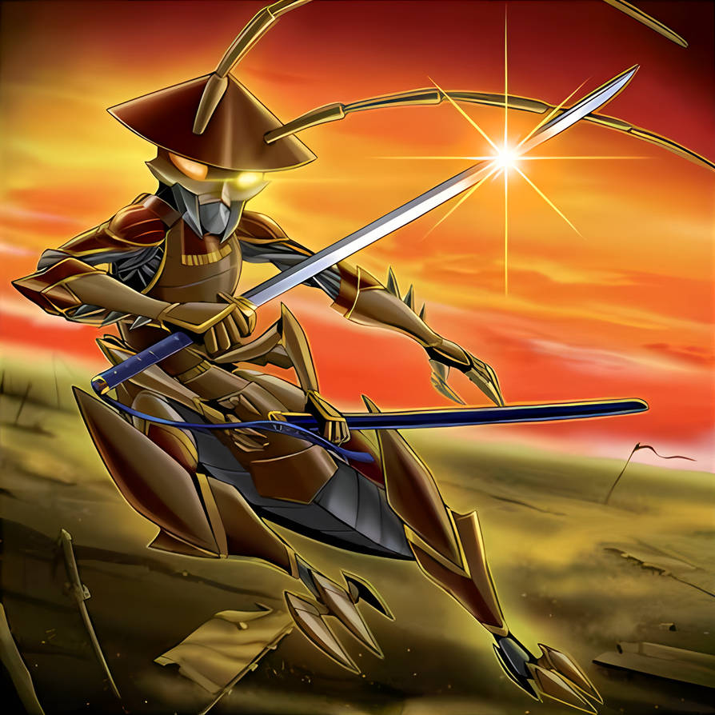
1x Ragnaraika Samurai Beetle
You can Special Summon this card (from your hand) by placing 1 of your banished Insect, Plant, or Reptile monsters on the bottom of your Main Deck. You can only Special Summon "Ragnaraika Samurai Beetle" once per turn this way. If this card is sent to the GY as material for a "Ragnaraika" Link Monster: You can target 1 Level 4 or lower Insect, Plant, or Reptile monster in your GY, except "Ragnaraika Samurai Beetle"; Special Summon it in Defense Position. You can only use this effect of "Ragnaraika Samurai Beetle" once per turn.
0-1x Ragnaraika Wicked Butterfly
You can discard this card; Special Summon 1 Insect, Plant, or Reptile monster from your hand. If this card is banished from the hand or GY: You can draw cards during the End Phase of this turn, equal to the number of different Monster Types among the monsters you control that are Insect, Plant, or Reptile. You can only use each effect of "Ragnaraika Wicked Butterfly" once per turn.
3x Ragnaraika Bloom
Insect, Plant, and Reptile monsters on the field gain 300 ATK/DEF, also all other monsters on the field lose 300 ATK/DEF. During your Main Phase: You can activate 1 of these effects;
●Add 1 "Ragnaraika" monster from your Deck to your hand, then discard 1 card.
●Special Summon 1 of your "Ragnaraika" monsters from your hand, GY, or banishment, in Defense Position.
You can only use this effect of "Ragnaraika Bloom" once per turn.
0-1x Ragnaraika Hunting Dance
Target cards your opponent controls, up to the number of different Monster Types among the Link Monsters you control that are Insect, Plant, or Reptile; destroy them. If a face-up Insect, Plant, or Reptile monster(s) you control is destroyed by battle or card effect, while this card is in your GY, except the turn it was sent there: You can banish this card, then target 1 monster your opponent controls; destroy it. You can only use each effect of "Ragnaraika Hunting Dance" once per turn.
0-1x Ragnaraika Wisteria of Woe
Special Summon this card as a Normal Monster (Plant/DARK/Level 4/ATK 1600/DEF 0) (this card is also still a Trap), then if you control a "Ragnaraika" Link Monster, you can banish up to 2 cards from your opponent's GY. During the End Phase, if this card is in your GY: You can shuffle 2 Insect, Plant, and/or Reptile monsters from your GY and/or banishment into the Deck, and if you do, Set this card. You can only use this effect of "Ragnaraika Wisteria of Woe" once per turn.
1-2x Ragnaraika Skeletal Soldier
2 monsters, including an Insect, Plant, or Reptile monster
You can target 1 "Ragnaraika" monster in your GY; Special Summon it in Defense Position. If this card is in your GY: You can target 1 Insect, Plant, or Reptile monster you control; place it on the bottom of the Deck, and if you do, Special Summon this card. You can only use each effect of "Ragnaraika Skeletal Soldier" once per turn, also you cannot Special Summon during the turn you activate either of this card's effects, except Insect, Plant, or Reptile monsters.
1x Ragnaraika Mantis Monk
2+ monsters, including an Insect, Plant, or Reptile monster
You can banish 2 Insect, Plant, and/or Reptile monsters from your GY; add 1 "Ragnaraika" Trap from your Deck to your hand. If this card is in your GY: You can target 1 Insect, Plant, or Reptile monster you control; place it on the bottom of the Deck, and if you do, Special Summon this card, also you cannot Special Summon for the rest of this turn, except Insect, Plant, or Reptile monsters. You can only use each effect of "Ragnaraika Mantis Monk" once per turn.
1x Ragnaraika Selene Snapper
2+ Insect, Plant, and/or Reptile monsters
You can banish up to 2 monsters from your GY, then target that many Spells/Traps your opponent controls; destroy them. If this card is in your GY: You can target 1 Insect, Plant, or Reptile monster you control; place it on the bottom of the Deck, and if you do, Special Summon this card, also you cannot Special Summon for the rest of this turn, except Insect, Plant, or Reptile monsters. You can only use each effect of "Ragnaraika Selene Snapper" once per turn.
1x Ragnaraika Chain Coils
2+ monsters, including an Insect, Plant, or Reptile monster
If your opponent activates a monster effect (except during the Damage Step): You can activate this effect; neither player can activate the effects of monsters in the hand this turn. If this card is in your GY: You can target 1 Insect, Plant, or Reptile monster you control; place it on the bottom of the Deck, and if you do, Special Summon this card, also you cannot Special Summon for the rest of this turn, except Insect, Plant, or Reptile monsters. You can only use each effect of "Ragnaraika Chain Coils" once per turn.
1x Ragnaraika Stag Sovereign
2+ Insect, Plant, and/or Reptile monsters
If a monster(s) is Special Summoned from your opponent's Deck and/or Extra Deck (except during the Damage Step): You can destroy 2 monsters on the field. If this card is in your GY: You can target 1 Insect, Plant, or Reptile monster you control; place it on the bottom of the Deck, and if you do, Special Summon this card, also you cannot Special Summon for the rest of this turn, except Insect, Plant, or Reptile monsters. You can only use each effect of "Ragnaraika Stag Sovereign" once per turn.
Reptilianne
reptilianne time
1-3x Reptilianne Coatl
If you control a DARK Reptile monster: You can Special Summon this card from your hand, then, if your opponent controls any monsters with 0 ATK, you can Special Summon up to an equal number of "Reptilianne" monsters from your hand. You can only use this effect of "Reptilianne Coatl" once per turn. If this card you control would be used as Synchro Material for a Reptile monster, you can treat it as a non-Tuner.
0-1x Reptilianne Lamia
If this card is in your hand and all monsters you control are face-up Reptile monsters (min. 1): You can target 1 face-up monster your opponent controls; change its ATK to 0, and if you do, Special Summon this card, then take damage equal to that monster's original ATK. If this card is sent to the GY as Synchro Material: You can target up to 2 face-up monsters on the field; change their ATK to 0. You can only use 1 "Reptilianne Lamia" effect per turn, and only once that turn.
0-1x Reptilianne Nyami
During the Main Phase, if you have a Reptile monster in your GY (Quick Effect): You can send this card from your hand to the GY, then target 1 face-up monster your opponent controls; change its ATK to 0. If your opponent controls a monster with 0 ATK: You can Special Summon this card from your GY. You can only use 1 "Reptilianne Nyami" effect per turn, and only once that turn.
0-1x Reptilianne Vaskii
This card cannot be Normal Summoned or Set. This card cannot be Special Summoned except by Tributing 2 face-up monsters with 0 ATK from anywhere on the field. Once per turn, you can select and destroy 1 face-up monster your opponent controls. There can only be 1 face-up "Reptilianne Vaskii" on the field.
3x Reptilianne Ramifications
Send 1 card from your hand to the GY and activate 2 of these effects, in sequence;
●Add 1 "Reptilianne" monster from your Deck to your hand.
●Add 1 "Reptilianne" Spell/Trap from your Deck to your hand, except "Reptilianne Ramifications".
●Change the ATK of 1 monster your opponent controls to 0.
You can only activate 1 "Reptilianne Ramifications" per turn.
1x Reptilianne Recoil
You can target 1 monster you control with 0 ATK and 1 DARK Reptile monster in your GY; destroy that monster on the field, and if you do, Special Summon that other monster from the GY. If your opponent activates a monster effect: You can target 1 monster your opponent controls with 0 ATK; take control of it, then, Special Summon 1 "Reptilianne Token" (Reptile/EARTH/Level 1/ATK 0/DEF 0) to your opponent's field. You can only use each effect of "Reptilianne Recoil" once per turn.
0-1x Reptilianne Spawn
Banish 1 "Reptilianne" monster from your GY; Special Summon 2 "Reptilianne Tokens" (Reptile/EARTH/Level 1/ATK 0/DEF 0).
0-1x Reptilianne Hydra
1 "Reptilianne" Tuner + 1+ non-Tuner monsters
If this card is Synchro Summoned: Destroy as many monsters your opponent controls with 0 ATK as possible, and if you do, draw 1 card for each monster destroyed.
0-1x Reptilianne Melusine
1 Reptile Tuner + 1+ non-Tuner monsters
If this card was Synchro Summoned using only Reptile monsters as material, it cannot be destroyed by battle or card effects. Once per Chain, when your opponent activates a monster effect, except during the Damage Step (Quick Effect): You can target 1 face-up monster your opponent controls; change its ATK to 0. If this Synchro Summoned card you control is sent to your GY by an opponent's card: You can add 1 Reptile monster from your Deck to your hand.
Therion
therion time
1x Therion "Empress" Alasia
You can only use each of the following effects of "Therion "Empress" Alasia" once per turn.
●You can target 1 "Therion" monster or 1 Reptile monster in your GY; Special Summon this card from your hand, and if you do, equip that monster to this card.
●You can discard 1 card, then target 1 "Therion" Monster Card in your Spell & Trap Zone; Special Summon it.
A "Therion" monster equipped with this card gains 700 ATK, also it can activate the 2nd effect listed above as if it were "Therion "Empress" Alasia".
1x Therion "King" Regulus
You can only use each of the following effects of "Therion "King" Regulus" once per turn.
●You can target 1 "Therion" monster or 1 Machine monster in your GY; Special Summon this card from your hand, and if you do, equip that monster to this card.
●When your opponent activates a card or effect (Quick Effect): You can send 1 "Therion" Monster Card from your hand or face-up field to the GY; negate that effect.
A "Therion" monster equipped with this card gains 700 ATK, also it can activate the 2nd effect listed above as if it were "Therion "King" Regulus".
0-1x Therion "Lily" Borea
You can only use each of the following effects of "Therion "Lily" Borea" once per turn.
●You can target 1 "Therion" monster or 1 Plant monster in your GY; Special Summon this card from your hand, and if you do, equip that monster to this card.
●You can send 1 card from your hand or field to the GY; add 1 "Therion" Spell/Trap from your Deck to your hand.
A "Therion" monster equipped with this card gains 700 ATK, also it can activate the 2nd effect listed above as if it were "Therion "Lily" Borea".
0-1x Therion Discolosseum
When this card is activated: You can add 1 "Therion" monster from your Deck to your hand. Once per turn, if your monster would be destroyed by battle, you can send 1 "Therion" card or 1 "Endless Engine Argyro System" from your Deck to the GY instead. Once per turn, when a monster is destroyed by battle and sent to the GY: You can target 1 "Therion" monster in your GY; add it to your hand. You can only activate 1 "Therion Discolosseum" per turn.
1x Springans Merrymaker
2 Level 4 monsters
If this card is Special Summoned from your Extra Deck: You can send 1 "Springans" monster from your Deck to the GY. During your opponent's Main or Battle Phase (Quick Effect): You can banish this card until the End Phase, then if you banished this card with 2 or more Xyz Materials, you can also send 1 Fusion Monster from your Extra Deck to the GY that lists "Fallen of Albaz" as material. You can only use each effect of "Springans Merrymaker" once per turn.
1x Gigantic "Champion" Sargas
2+ Level 8 monsters
Once per turn, you can also Xyz Summon "Gigantic "Champion" Sargas" by using 1 "Springans" Xyz Monster you control. (Transfer its materials to this card.) While this card has material: You can add 1 "Springans" or "Therion" card from your Deck to your hand. If material is detached from a monster(s) on the field (except during the Damage Step): You can target 1 card on the field; either destroy it or return it to the hand. You can only use each effect of "Gigantic "Champion" Sargas" once per turn.
Techs
The non-archetypal stuff with potential
Aratama
Cannot be Special Summoned. Once per turn, during the End Phase, if this card was Normal Summoned or flipped face-up this turn: Return this card to the hand. When this card is Normal Summoned or flipped face-up: You can add 1 Spirit monster from your Deck to your hand, except "Aratama".
Sakitama
Cannot be Special Summoned. Once per turn, during the End Phase, if this card was Normal Summoned or flipped face-up this turn: Return this card to the hand. You can only use each of the following effects of "Sakitama" once per turn. You can reveal this card in your hand; immediately after this effect resolves, Normal Summon 1 Spirit monster from your hand. If this card is Tributed: Target 1 Spirit monster in your GY; add it to your hand.
I.A.S. -Invasive Alien Species-
Cannot be destroyed by battle or card effects while your opponent has a face-up card in their Field Zone. You can only use each of the following effects of "I.A.S. -Invasive Alien Species-" once per turn. If your opponent has a face-up card in their Field Zone: You can target 1 monster they control; destroy it, and if you do, this card gains 1000 ATK. If your opponent has a face-up card in their Field Zone, while this card is in your GY: You can Special Summon this card.
Lamia
If this card is Normal or Special Summoned: You can add 1 Level 8 Reptile monster from your Deck to your hand. If this card is banished: You can target 1 Reptile monster you control; it cannot be destroyed by card effects until the end of the next turn. You can only use each effect of "Lamia" once per turn.
Liberator Eto
Cannot be Normal Summoned/Set. Must be Special Summoned (from your hand or GY) by paying half your LP while your opponent has a Monster Card on their field or GY with an effect that activates in the hand or Monster Zone in response to a card or effect activation. You can only Special Summon "Liberator Eto" once per turn this way. This card's Special Summon cannot be negated. While this card is in the Monster Zone, it cannot be used as material for a Fusion, Synchro, Xyz, or Link Summon, also it is unaffected by monster effects activated on your opponent's field during your turn only.
Vanguard of the Underground Emperor
If a monster(s) is sent from the hand to the GY, while this card is in your GY (except during the Damage Step): You can Special Summon this card, but place it on the bottom of the Deck when it leaves the field. You can only use this effect of "Vanguard of the Underground Emperor" once per turn.
Duality
Tribute 1 LIGHT or DARK monster; Special Summon 1 LIGHT or DARK monster from your hand or Extra Deck with the same original Type and Level, but a different original Attribute. During your Main Phase: You can banish this card from your GY, then target 1 LIGHT and 1 DARK monster in your GY; shuffle both into the Deck, then draw 1 card. You can only use each effect of "Duality" once per turn.
Shadow's Light
Target 1 DARK monster you control; Special Summon 1 LIGHT monster from your Deck or Extra Deck with the same original Type and Level. You can banish this card from your GY; during your Main Phase this turn, you can Normal Summon 1 LIGHT or DARK monster in addition to your Normal Summon/Set. (You can only gain this effect once per turn.) You can only use each effect of "Shadow's Light" once per turn. You cannot conduct your Battle Phase the turn you activate either of this card's effects.
A Bao A Qu, the Lightless Shadow
2+ monsters, including a Fiend monster
During the Main Phase (Quick Effect): You can discard 1 card, then activate 1 of these effects;
● Destroy 1 card on the field.
● Banish this card (until the End Phase), and if you do, Special Summon 1 LIGHT or DARK monster from your GY.
During your Standby Phase: You can draw cards equal to the number of different Monster Types among the monsters in your GY, then place the same number of cards from your hand on the bottom of the Deck in any order. You can only use each effect of "A-Bao A Qu, the Lightless Shadow" once per turn.
Link Spider
1 Normal Monster
Once per turn: You can Special Summon 1 Level 4 or lower Normal Monster from your hand to your zone this card points to.
Spright Sprind
2 monsters, including a Level/Rank/Link 2 monster
Cannot be used as Link Material the turn it is Link Summoned. You can only use 1 of the following effects of "Spright Sprind" per turn, and only once that turn. If this card is Link Summoned: You can send 1 Level 2 monster from your Deck to the GY. If another monster is Special Summoned while this card is on the field (except during the Damage Step): You can detach 1 material from an Xyz Monster you control, then target 1 monster on the field; return it to the hand.
Herald of the Arc Light
1 Tuner + 1+ non-Tuner monsters
Any monster sent from the hand or Main Deck to the GY is banished instead. When a Spell/Trap Card, or monster effect, is activated (Quick Effect): You can Tribute this card; negate the activation, and if you do, destroy that card. If this card is sent to the GY: You can add 1 Ritual Monster or 1 Ritual Spell from your Deck to your hand.
Rikka Queen Strenna
2 Level 4 monsters
You can detach 1 material from this card, then target 1 Plant monster or "Rikka" card in your GY; add it to your hand. If this card with Xyz Material is Tributed: You can Special Summon 1 Rank 5 or higher Plant Xyz Monster from your Extra Deck or GY, then you can attach this card to it as material. You can only use each effect of "Rikka Queen Strenna" once per turn.
Eclipse Twins
2 Level 4 monsters
For this card's Xyz Summon, you can treat Rank 4 monsters you control as Level 4 monsters for material. You can detach 1 material from this card; this card can make up to 2 attacks on monsters during each Battle Phase this turn. If this card is sent to the GY: You can target 2 other Rank 4 or lower Xyz Monsters in your GY; Special Summon 1 of the 2, and if you do, attach the other to it. You can only use this effect of "Eclipse Twins" once per turn.
sample lists go here
cores too
a bunch of various sample combo lines